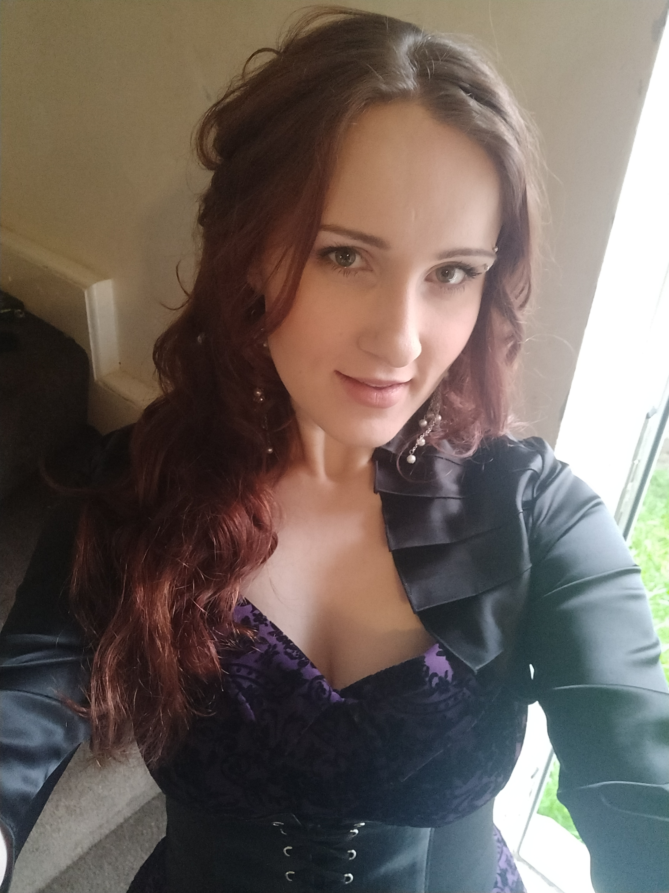

Below are some of the completed software solutions meeting all requirements and deliverables, serving insfiration for future development efforts.
HI THERE!
I am Kristi Järve
full stack web and programming developer trainee
Born and raised in Estonia, now residing in the UK, I am a multi-talented individual on a mission to become a full-fledged web and software developer. My passion for technology is matched only by my love for creative pursuits like graphic design and traditional drawing. When I'm not coding or sketching, you can find me immersed in a video game, playing with my feline friends, cozying up with my partner, getting lost in a good book, or exploring the great outdoors. Always up for a challenge, I relish in the opportunity to learn something new every day.
Below are some of the completed visual designs, showcasing the creativity and technical skills. These designs can range from logos, branding materials, web and software interfaces, illustrations and more.
Below are some of the completed digital and traditional artwork created using Abode Photoshop, Procreate as well as using traditional mediums suchs as paints, pencils etc.

Kristi Järve
Web and Software developer, Graphics Designer and an Artist